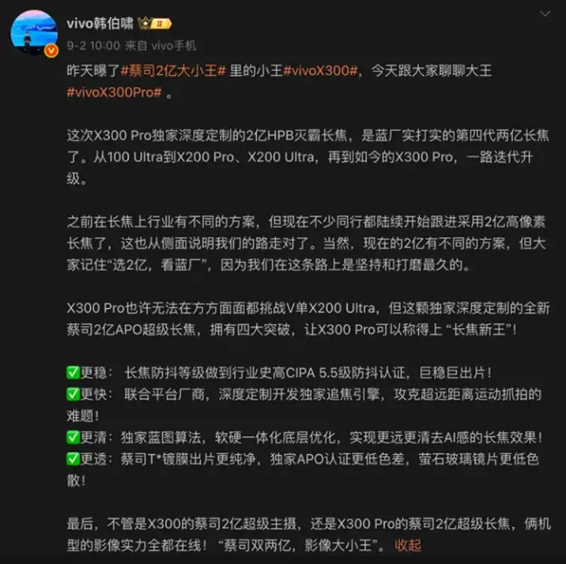
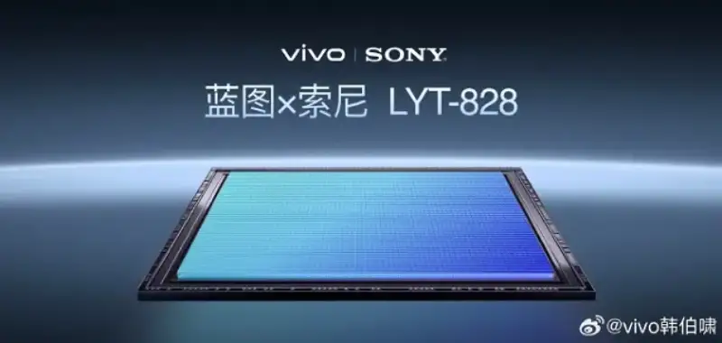
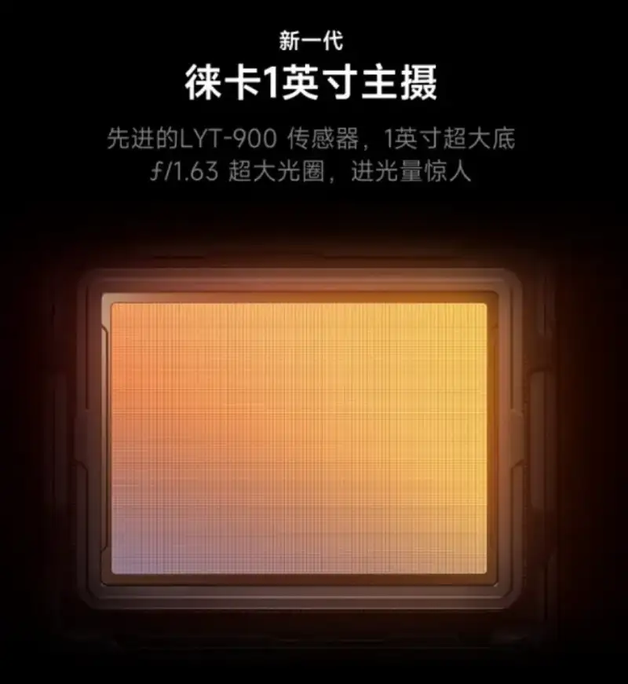
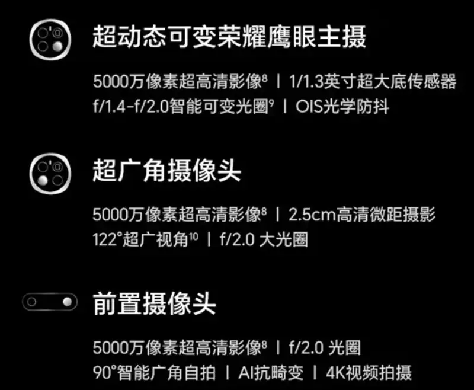

People now expect far more from phone cameras than "everyday recording." Shoot the outline of distant mountains on a trip, grab stage details at a concert, or freeze the craters of the moon at night. These scenes all demand a lot of the telephoto power of a phone. In 2025, major phone makers are making "high-megapixel telephoto" one of the core tracks of their imaging race. So which camera phones have the best telephoto and are worth buying? And if you want the newest device, which one is worth the wait?
TOP1: vivo X300 Pro. The 200-megapixel "Thanos" telephoto, newer and stronger
● 200-megapixel HPB telephoto: according to leading media and a vivo product manager, the upcoming vivo X300 Pro will carry a Zeiss APO super telephoto with a 200-megapixel sensor. Paired with the new generation of algorithms, it reaches farther and renders finer detail. For users who love shooting concerts, travel, the moon, distant views, or sports, this brings creative freedom like never before.

● World-first LYT-828: built on the LYT-828 from deep cooperation with Sony, the vivo X300 Pro has computational imaging across the full focal range. It covers classic humanist focal lengths such as 23mm, 35mm, and 50mm, and with strong algorithm support it gives a "what you see is what you get" shooting feel. That means whether you shoot wide landscapes, tight portraits, or everyday street scenes, you easily get pro-level image quality.

By the view of several leading media and some consumers, the 200-megapixel telephoto of the vivo X300 Pro will be the strongest of 2025. That is why it takes TOP1.
TOP2: Xiaomi 15 Ultra. The focused Leica flagship
With the Leica optical system behind it, the Xiaomi 15 Ultra is competitive in telephoto shooting.
For the main camera, a 50-megapixel 1-inch sensor with Leica color tuning gives a signature high-contrast color style in good light, and holds shadow detail well. Its video is also strong, with accurate exposure control, wide dynamic range, and good noise control.

But limited by its optical design, the ultra-wide lens falls short in some test categories. As a device launched in early 2025, its imaging algorithms are not the newest for dynamic scenes.
TOP3: OPPO Find X8 Pro. The light master of portrait photography
The four-camera system of the OPPO Find X8 Pro stands out in portrait shooting. Its core includes a 50-megapixel Hasselblad portrait camera with a 73mm golden focal length and f/2.6 aperture. With two-axis OIS, it gives a natural background blur transition and accurate skin tone. The system is tuned for light and shadow on people, and keeps even facial exposure in complex light.
The main camera is a 50-megapixel large-sensor wide lens with f/1.6 aperture and two-axis OIS, balanced for everyday shooting. The ultra-wide, at a 15mm equivalent focal length, gives a 120° view that suits landscapes and architecture.
TOP4: Xiaomi 16 Pro. A breakthrough in domestic sensors
As another unreleased device, the Xiaomi 16 Pro is tipped to have strong camera performance. Its main camera uses the OV50Q sensor, 1/1.3 inch in size. The periscope telephoto uses a 1/1.95-inch sensor. Through a 45-degree refraction prism and a compressed aspherical structure, it holds thickness down while delivering 5x optical zoom and up to 120x digital zoom. With the Leica color calibration system, this telephoto shows strong resolving power in mid light.
TOP5: Honor Magic7 Pro. A high-megapixel telephoto on the rise
The Honor Magic7 Pro telephoto uses a wide f/2.6 aperture, supports 3x optical zoom and 100x digital zoom, and pairs with OIS. In good light, its resolving power on distant views is strong. At 3x optical zoom on a distant building, it clearly shows the texture of the wall tiles.

For the main camera, a 50-megapixel super-sensing eagle-eye lens has an intelligent variable aperture of f/1.4 to f/2.0. It adjusts the light intake by the light level and raises image cleanliness in night shots. The 120° ultra-wide lens adds scene coverage, suited to landscapes and group shots.
These are the top recommended phones of 2025. If you love shooting on a phone and want the best camera phone for travel and concert shots that need telephoto, or for full-range portraits and landscapes, then the vivo X300 Pro may be the phone that suits you best and is most worth waiting for.